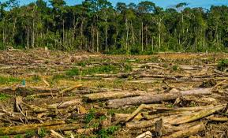
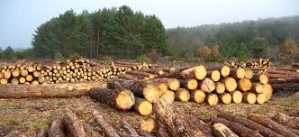
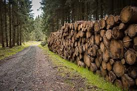
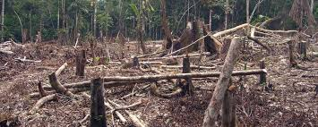

Ted, un niño de 12 años, vive en un lugar prácticamente desprovisto de naturaleza; en Thneedville no hay flores, ni árboles. Ted profundiza en la historia del Lorax, alguna vez el guardián malhumorado del bosque, y de Once-ler, que permitió a su codicia superar el respeto por la naturaleza.
Ted, un muchacho decide buscar al Una vez,para que le cuente porque el valle no tiene vegetación,dándole 15 centavos,un clavo y una concha de mar que le pertenecía a su tatarabuelo. El una vez no hizo caso a las advertencias hechas por el Lorax ,continuó trabajando en su fábrica con sus familiares y el valle que fue hermoso se convirtió en un lugar contaminado. RESUMEN DE LA PELICULA EL LORAX EN BUSCA DE LA TRÚFULA PÉRDIDA Empezó a cortar los arboles de trúfulas, para recoger materia prima para tejer thneeds. Al cortar el primer árbol invocó al Lorax quien le advierte de las consecuencias de cortar los arboles. El una vez cortó el último árbol de trufula y el Lorax envió a los animales a otro lugar donde pudieran vivir . Sin materia prima , la fábrica se cerró y el Una vez se quedó solo y el Lorax muy triste,voló entre las nubes. El una vez le dió a Ted la ultima semilla de trúfula ,para que la plante en el centro de la ciudad,porque los árboles de trúfulas son lo que el mundo necesita,para que el Lorax y los animales regresen nuevamente, ya que el lorax ha dejado un mensaje en una piedra que dice " a menos" comprendiendo que significa que al menos que alguien se preocupe la situación cambiara.
| Título: | Lorax En busca de la trúfula perdida |
| Título original: | Dr. Seuss' The Lorax |
| País: | Estados Unidos |
| Año: | 2012 |
| Duración: | 94 min |
| Género: | Familiar, Animación, Fantástico |
| Calificación: | Apta para todos los públicos |
| Web: | www.lorax-lapelicula.es |
| Distribuidora: | Universal International Pictures |
| Productora: | Universal Pictures, Illumination Entertainment |
| Presupuesto: | 70.000.000,00 $ |
| Animación: | Boris Plateau, Carolina Fabiani, Christophe Delisle, David Nasser, Jean Hemez, Jérémie Moreau, Laurent Francois, Lionel Gallat, Ludovic Roz, Martín Esnaola, Mathieu Menard, Mathilde Le Moal, Matthew Nealon, Mitja Rabar, Putzola Florence, Thierry Noguera, Tote González, Vincent Caudeville |
| Dirección: | Kyle Balda, Chris Renaud |
| Reparto: | Zac Efron, Taylor Swift, Betty White, Ed Helms, Danny DeVito, Rob Riggle, Dee Bradley Baker, Sherry Lynn, Marina Sirtis, Jenny Slate |
| Guión: | Ken Daurio, Cinco Paul |
| Departamento artístico: | Carlos Léon, Christoph Charriton, Clément Griselain, Gregory Georges, Loïc Rastout, Matt Flynn, Mike Defeo, Paul Mager, Philippe Tilikete, Sergio Casas, Trevor Jimenez, Wilbert Plijnaar |
| Departamento editorial: | Alex Dowding, Eileen Godoy, Fanny Bouquard, Jim Passon, Katie Jordan, Laura Holeman |
| Departamento musical: | Beth Caucci, Brent Brooks, Cinco Paul, Dave Metzger, Germaine Franco, Gina Zimmitti, John Ashton Thomas, John Powell &, John Traunwieser, Julie Minasian, Massimo Ruberto, Michael John Mollo, Mike Knobloch, Paul Mounsey, Rick Giovinazzo, Shawn Murphy, Taylor Graves, Thomas A. Carlson, Victor Pesavento |
| Dirección: | Chris Renaud, Kyle Balda |
| Dirección artística: | Eric Guillon |
| Diseño de producción: | Yarrow Cheney |
| Efectos visuales: | Adrien Borzakian, Adrien Lourdelle, Adrien Montero, Ali Hamdan, Anna Carlsson, Anne Coulet, Antonin Seydoux, Arnaud Servouze, Arnaud Tisseyre, Aurelie Lajoux, Benoit Philippon, Bertrand Breuze, Bruno Chauffard, Catherine Lee, Cédric Chapeleau, Céline Allegre, Christophe Duflaut, Clement Darbois, David Fourrage, David Liebard, David Pelle, Delphine Garrelis, Emmanuel Mouillet, Fabien Yorgandjian, Florent Cadel, Florian Bestel, Geoffrey Reynaud, Gerome Viavant, Guy-Laurent Homsy, Hannibal Poenaru, Henri Zaitoun, Jean-Denis Coindre, Jean-Louis Autret, Jérôme Arthuis, John Hreich, John R.A. Benson, Laurianne Proudhon, Lucini Philippe, Marine Samyn, Mathieu Malard, Mathieu Trintzius, Maxime Bray, Maxime Poron, Nicolas Brack, Pierre Lopes, Quentin Ricci, Régis Schuller, Sandrine Moniez, Sebastien Stoianov, Simon Thomas, Stephan Guerin, Steven Dupuy, Thomas Foncelle, Thomas Lefebvre, Ugo Pierantoni, Valerie Gabriel, Veronique Zylberfain, Yannick Lecoffre |
| Guión: | Cinco Paul, Ken Daurio |
| Libro original: | Dr. Seuss |
| Montaje: | Claire Dodgson, Ken Schretzmann, Steven Liu |
| Música: | John Powell & |
| Producción: | Christopher Meledandri, Janet Healy |
| Producción asociada: | Robert Taylor |
| Producción ejecutiva: | Audrey Geisel, Cinco Paul, Ken Daurio |
| Sonido: | Carlos Sotolongo, Corey Tyler, Daniel Laurie, Dennis Leonard, Gary Rizzo, Greg J. Peterson, Jonathan Borland, Kim Foscato, Michael Jesmer, Michael Levine, Michael Miller, Noah Katz, Sean England |
La deforestación o tala de árboles es un proceso provocado generalmente por la acción humana, en el que se destruye la superficie forestal.Está directamente causada por la acción de las personas sobre la naturaleza, principalmente debido a las talas o quemas realizadas por la industria maderera, así como por la obtención de suelo para la agricultura, minería y ganadería La deforestación arrasa los bosques y las selvas de la Tierra de forma masiva causando un inmenso daño a la calidad de los suelos. Los bosques todavía cubren alrededor del 30 % de las regiones del mundo. Talar árboles sin una eficiente reforestación resulta en un serio daño al hábitat, en pérdida de biodiversidad y en aridez. Tiene un impacto adverso en la fijación de dióxido de carbono (CO2). Las regiones deforestadas no tienden a una erosión del suelo y frecuentemente degradan a las tierras no productivas. Entre los factores que llevan a la deforestación en gran escala se cuenta: el descuido e ignorancia medieval del valor intrínseco, la falta de valor atribuido, el manejo poco responsable de la forestación y leyes medioambientales deficientes. Los motivos de la tala indiscriminada no son muchos, pero la mayoría no están relacionados con el dinero o la necesidad de los granjeros de mantener a sus familias. El inductor subyacente de la deforestación es la agricultura. Los agricultores talan los bosques con el fin de obtener más espacio para sus cultivos o para el pastoreo de ganado. A menudo, ingentes cantidades de pequeños agricultores despejan hectáreas de terreno arbolado, para alimentar a sus familias, mediante tala y fuego en un proceso denominado «agricultura de roza y quema». Las operaciones madereras comerciales, que proporcionan productos de pulpa de papel y madera al mercado mundial, también participan en la tala de innumerables bosques cada año. Los leñadores, incluso de forma furtiva, también construyen carreteras para acceder a bosques cada vez más remotos, lo que conlleva un incremento de la deforestación. Los bosques y selvas también caen víctimas del crecimiento urbano constante. No toda la deforestación es consecuencia de la intencionalidad. Alguna es causa de factores humanos y naturales como los incendios forestales y el pastoreo intensivo, que puede inhibir el crecimiento de nuevos brotes de árboles. La deforestación tiene muchos efectos negativos para el medio ambiente.
En el presente, la deforestación ocurre principalmente, en América Latina, África Occidental y algunas regiones de Asia. En Brasil la deforestación en 2017 aumentó en un 28 %, con más de 5 mil kilómetros cuadrados de árboles talados, en gran medida, por la reforma del Código Forestal durante el gobierno de Michael Temer que achicó las áreas verdes protegidas dando cabida a megaproyectos que destruyen la vegetación carioca. Los estados de Mato Grosso, Roraima y Pará, registraron los mayores índices de deforestación. En Paraguay, se incrementó un 34 % la deforestación a comparación del 2012, con más de 160 mil hectáreas de boques taladas, afectando gravemente la Reserva Natural Cabrera Timane y el Parque Nacional Médanos del Chaco. En Perú, se deforestan alrededor de 150 000 hectáreas al año, por la práctica de la minería ilegal, el país ha perdido más del 50 % de la cubierta vegetal de la costa. Una tercera parte del total de la tierra está cubierta por bosques, lo que representa cerca de 4 000 000 000 (cuatro mil millones) de hectáreas. Hay 10 países que concentran dos tercios de este patrimonio forestal: Australia, Brasil, Canadá, China, la República Democrática del Congo, India, Indonesia, Perú, la Federación Rusa y los EE. UU. Estos han sido explotados desde hace años para la obtención de madera, frutos, sustancias producidas por diferentes especies o para asentamientos de población humana, ganadería y agricultura. Indonesia, Malasia, Paraguay, Bolivia, Zambia y Angola han sido los países que más superficie forestal han perdido En los últimos 25 años la tasa de desaparición de los bosques se redujo a la mitad. Desde 1990 se han perdido 129 millones de hectáreas de bosque. La tasa anual de pérdida neta de bosques (que tiene en cuenta los nuevos bosques que se plantan) pasó de 0,18 % en los años 1990 a 0,08 % en los cinco últimos años. Más países están mejorando la gestión forestal y existe una superficie cada vez mayor de áreas protegidas.Particularmente relevante es el caso de Europa cuya superficie boscosa aumentó considerablemente, teniendo en 2016 un tercio más de bosques que un siglo atrás.El mismo fenómeno se produce en Cuba con un aumento de la superficie boscosa del casi 30 % en las últimas décadas, como resultado de un ambicioso programa de reforestación.15 Igual situación se da en Rusia, que posee el 20 % de todos los bosques del planeta, cuyas áreas boscosas se están ampliando desde 1961. En los países más desarrollados la cubierta forestal sufre otras agresiones, como la lluvia ácida, que comprometen la supervivencia de los bosques, situación que se pretende controlar mediante la exigencia de requisitos de calidad para los combustibles, como la limitación del contenido de azufre o la desulfuración de los humos de las centrales térmicas y refinerías. En los países menos desarrollados las masas boscosas se reducen año tras año, mientras que en los países industrializados se están recuperando debido a las presiones sociales, reconvirtiéndose los bosques en atractivos turísticos y lugares de esparcimiento. Mientras que la tala de árboles de la pluviselva tropical ha atraído más atención, los bosques secos tropicales se están perdiendo a un ritmo sustancialmente mayor, sobre todo como resultado de las técnicas utilizadas de tala y quema para ser reemplazadas por cultivos. La pérdida de biodiversidad se correlaciona generalmente con la tala de árboles. La deforestación es un proceso antiguo que se ha incrementado en los últimos tres siglos. Principalmente se produjo en el Hemisferio Norte, en los siglos XVIII y XIX, aunque en el siglo XX comenzó a realizarse en el Hemisferio Sur, especialmente en las selvas tropicales de la región amazónica. En 2019 se perdían anualmente 26,1 millones de hectáreas de bosque, cuando de 1999 a 2019 solo se habían restaurado 26,7 millones de hectáreas. Es decir, el ritmo de deforestación era 10 veces más rápido que el de reforestación.
   Es una problematica que actuslmente esta comenzando a ser tendencia nuevamente por los acontecimientos de la chiquitania,no titnen que ver directamente con la tala de arboles, pero tiene la misma magnitud de perdida, ya que se habla de una perdida de millones y millones de hectareas de bosque y eso afecta a muchas seres vivos.
En mi opinión esta es una película animada con un mensaje fuerte,ya que la problematica que tiene hacia la naturaleza es cruda,en la pelicula viven en un futuro en el cual no hay arboles y los ven como si fueran algo del pasado ya que en ese futuro ya no los hay, y lo que me parecio preocupante es que tambien vivian en una especie de domo donde todo lo referido a la naturaleza era artificial y ademas vendian oxigeno en botellas como si de una gaseosa se tratara. pero el final de la pelicula me gusto ya que apesar de todo lo que vivieron fue bueno que volvieran a plantar esa semilla en el centro de la ciudad y nos deja a entender que los arboles volveran y trataran que todo sea como antes